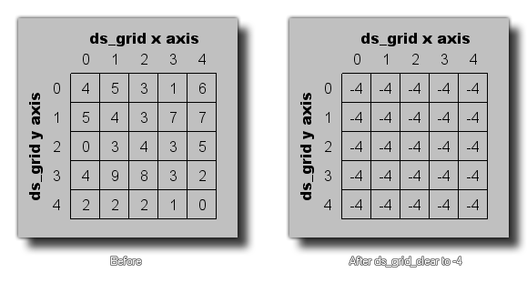

ds_grid_clear(index, val);
| Argument | Description |
|---|---|
| index | This index of the grid to clear. |
| val | The new value for all grid cells. |
Returns : N/A
This function can be used to clear a given ds_grid to a specific value. All cells within the grid will then contain this value, which can be a real number or a string. The image below illustrates how this works:

ds_grid_resize(global.Grid, room_width / 32, room_height / 32);
ds_grid_clear(global.Grid, -1);
The above code will resize the ds_grid indexed in the global variable "Grid" and then clear it so that each cell holds the value -1.